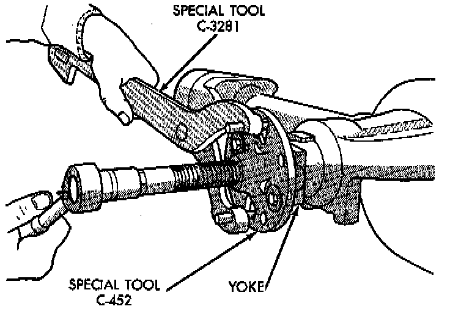
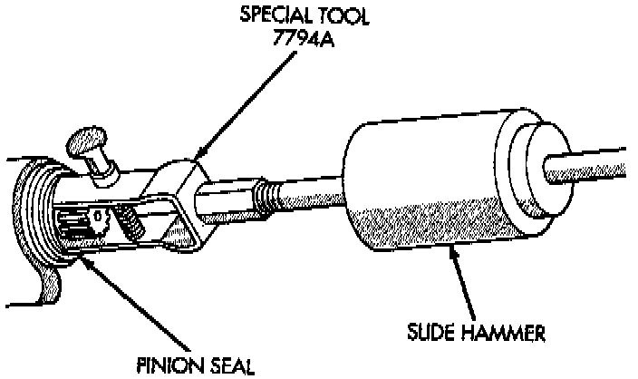
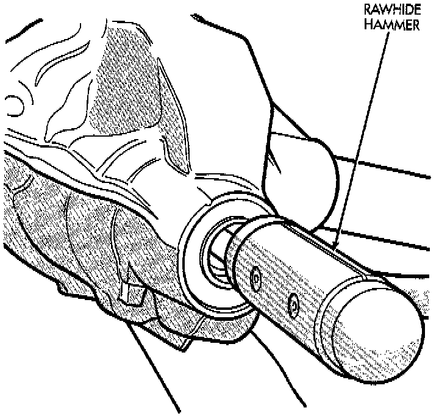
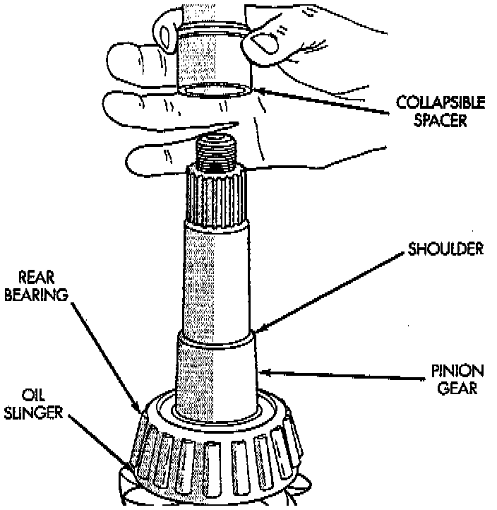
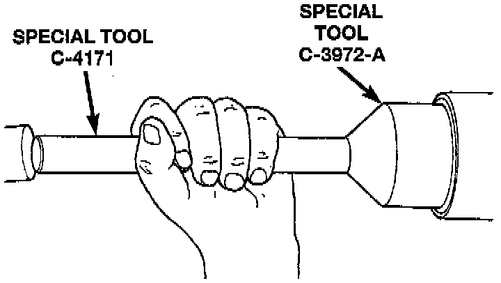
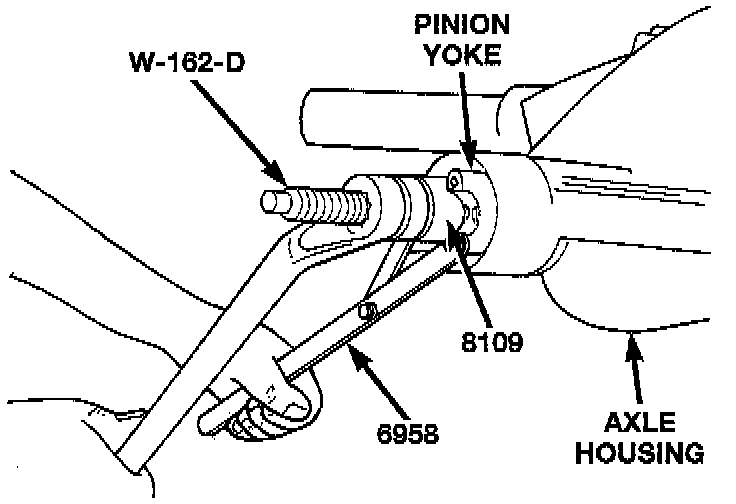
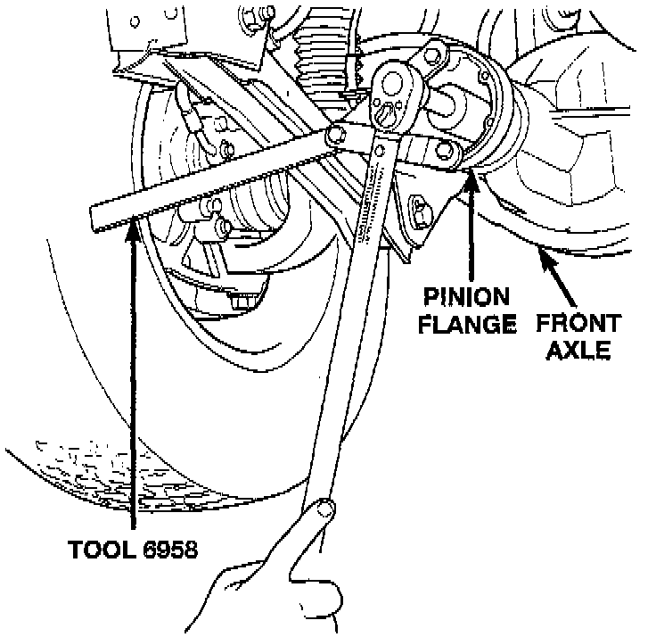
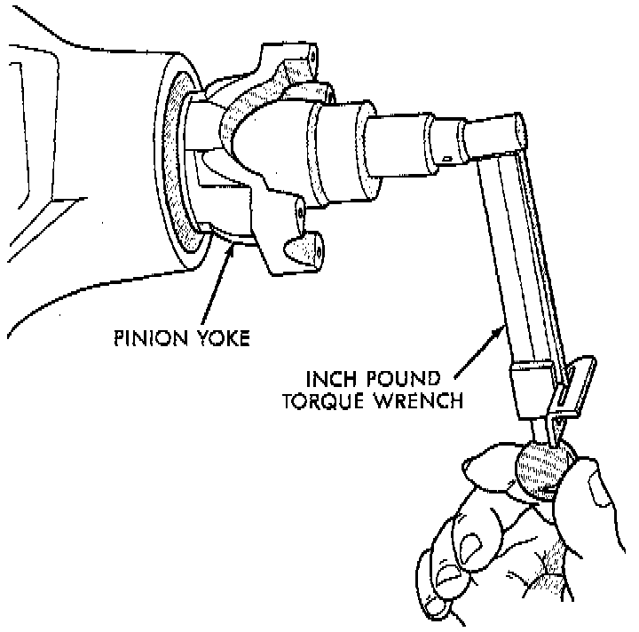

Collapsible Spacer Replacement
REMOVAL W/PINION INSTALLED1. Raise and support the vehicle.
2. Remove wheel and tire assemblies.
3. Remove brake rotors and calipers. Refer to Brakes and Traction Control, for proper procedures.
4. Mark the propeller shaft and pinion yoke, or pinion flange, for installation reference.
5. Remove the propeller shaft from the yoke, or pinion flange.
6. Rotate the pinion gear three or four times.
7. Measure the amount of torque necessary to rotate the pinion gear with a (inch lbs.) dial-type torque wrench. Record the torque reading for installation reference.
8. Using a short piece of pipe and Holder 6958, or equivalent to hold the pinion yoke, or pinion flange, remove the pinion nut and washer.

9. Use Remover C-452 and Wrench C-3281, or equivalents to remove the pinion yoke, or flange.

10. Use Remover 7794-A, or equivalent and slide hammer to remove the pinion shaft seal.
11. Remove the front pinion bearing using a pair of suitable pick tools to pull the bearing straight off the pinion gear shaft. It may be necessary to lightly tap the end of the pinion gear with a rawhide or rubber mallet if the bearing becomes bound on the pinion shaft.
12. Remove the collapsible spacer.
REMOVAL W/PINION REMOVED
1. Raise and support the vehicle.
2. Remove wheel and tire assemblies.
3. Remove brake rotors and calipers. Refer to Brakes and Traction Control, for proper procedures.
4. Mark the propeller shaft and pinion yoke, or pinion flange, for installation reference.
5. Remove the propeller shaft from the yoke, or pinion flange.
6. Rotate the pinion gear three or four times.
7. Measure the amount of torque necessary to rotate the pinion gear with a (inch lbs.) dial-type torque wrench. Record the torque reading for installation reference.
8. Remove differential assembly from axle housing.
9. Using Holder 6958, or equivalent to hold yoke, or flange, and a short length of 1 inch pipe, remove the pinion nut and washer.
10. Using Remover C-452 and Wrench C-3281, or equivalents, remove the pinion yoke, or flange, from pinion shaft.

11. Remove the pinion gear from housing. Catch the pinion with your hand to prevent it from falling and being damaged.
12. Remove collapsible spacer from pinion shaft.

INSTALLATION
1. Install a new collapsible preload spacer on pinion shaft.
2. If pinion gear was removed, install pinion gear in housing.
3. Install pinion front bearing, if necessary.

4. Apply a light coating of gear lubricant on the lip of pinion seal. Install seal with Installer C-3972-A and Handle C-4171, or equivalents, if necessary.

5. Install yoke, or pinion flange, with Installer W-162-D, Cup 8109, and holder 6958, or equivalents.
6. If the original pinion bearings are being used, install differential assembly and axle shafts, if necessary.
NOTE: If new pinion bearings were installed, do not install the differential assembly and axle shafts until after the pinion bearing preload and rotating torque are set.
7. Install the pinion washer and a new nut on the pinion gear. Tighten the nut to 217 Nm (160 ft. lbs.) minimum. Do not over-tighten. Maximum torque is 353 Nm (260 ft. lbs.).
CAUTION: Never loosen pinion gear nut to decrease pinion gear bearing rotating torque and never exceed specified preload torque. If preload torque is exceeded a new collapsible spacer must be installed. The torque sequence will then have to be repeated.
NOTE: If the spacer requires more than 353 Nm (260 ft. lbs.) of torque to crush, the collapsible spacer is defective and must be replaced.

8. Using yoke holder 6958, or equivalent, a short length of 1 in. pipe, and a torque wrench set at 353 Nm (260 ft. lbs.), crush collapsible spacer until bearing end play is taken up.

9. Slowly tighten the nut in 6.8 Nm (60 inch lbs.) increments until the rotating torque is achieved. Measure the rotating torque frequently to avoid over crushing the collapsible spacer.
10. Check rotating torque with an inch pound torque wrench. The torque necessary to rotate the pinion gear should be:
- Original Bearings-The reading recorded during removal, plus an additional 0.56 Nm (5 inch lbs.).
- New Bearings-2 to 5 Nm (15 to 35 inch lbs.).
11. Install differential assembly and axle shafts, if necessary.
12. Align marks made previously on yoke, or pinion flange, and propeller shaft and install propeller shaft.
13. Install brake rotors and calipers. Refer to Brakes and Traction Control, for proper procedures.
14. Add gear lubricant, if necessary.
15. Install wheel and tire assemblies.
16. Lower vehicle.